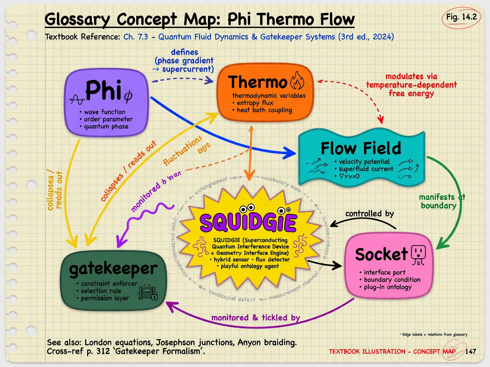

Master rocks and open questions
Consolidated honesty table — every major claim that marketing might exaggerate, with current evidence level. Supersedes scattered rocks in Chapter 12 and the site index. Update this table when implementation catches aspiration.
| Claim | Operator reality | Label | Evidence / gap |
|---|---|---|---|
| This is a certified textbook | Long-form operator course; manuscript not publisher-certified | Philosophy | Edition subtitle, not external validation |
| Textbook of 2026 | Edition name and teaching ambition | Philosophy | Not third-party curriculum approval |
| Field literacy as greatest weapon | Read/write continuous state locally; distrust single dashboards | Philosophy | Operator discipline, not ordnance |
| Living thermodynamic computer | ThermoAccountant in stderr each dispatch | Implemented | grep THERMO |
| Landauer joules from GPU | Proxy integral entropyThisFrame | Not package wattmeter | |
| Packet field sees everything | Local sockets + heuristics on your machine | Implemented | Not internet omniscience |
| RF planetary shell | planetary_weave.comp visual stack | Visual | Not spectrum analyzer |
| Queen holds all gates | WebRTC/EME through gatekeeper when built | Implemented | QUEEN_READY required |
| DARPA-grade / robot brain | In-process Queen architecture metaphor for gate+recall stack | Not a government program deliverable | |
| Hostess 7 SDF brain imaging | Procedural SDF plates + segment doctrine | Not fMRI; Hostess7/ workflow | |
| KILROY on daily driver host | Kernel image exists; dev may use generic Linux | Implemented | QEMU/bare-metal vs laptop |
| Love / God chapters prove physics | Sacred operator language beside math | Philosophy | Ch 16–18 optional track |
| Sub-micron SEM in shaders | Procedural pixel detail tiers | Spiderweb simulate tier | |
| Tesla valve in chassis | TESLA_R_* bias; data_bus slots | No fluidic part shipped | |
| 96% lies / device cannot drift | Security posture narrative | Philosophy | Not statistical claim |
| Illustration density ~1/1000 words | Mayer segmenting standard for v5 | Philosophy | Editorial rule, Ch 1 |
| Shannon H on fabric texels | Entropy Oracle on files | Implemented | Separate from ThermoAccountant |
| Sealed / sovereign time | TotalTime::seal() + HMAC pulses | Implemented | SQUIDGIE on verify fail |
| x86.comp decorative | Default ./linux.sh run path | Implemented | Field Die product |
| Equations without bindings | Theory vocabulary until grep proves | Ch 12 capstone table layers | |
| Grok16 2.0 single fabric | belt_2_0 chunked redata · one amplitude at depth 0 | Implemented | test-battery-belt · integrate env |
| Depth fields sealed and destroyed | Sealed and destroyed — field_depth cannot persist at any gate | Implemented | field-depth-singularizer · Queen browser |
| DNS egress MITM-free | Permitted egress hash match logging | Implemented | dns-egress-integrity.jsonl |
| Host desktop first page | Mirror incumbent OS · field startbar | Implemented | :9477/field |
| this_one / that_one | Phantom lanes blocked until existence correlates | Implemented | ironclad-spatial-existence doctrine |
Open questions (honest gaps — not roadmap promises): calibrated GPU joules vs proxy entropy; wire DNSSEC validation beyond stub counters; Queen production parity across all gate classes; reproducible cross-host sovereign time under adversarial NTP; belt_2_0 runtime wins on large redata workloads (micro-bench may favor host -O2). File issues against AMOURANTHRTX / NEXUS / Grok16 when you close a gap — then update this row.
Glossary — Field Technology v5
This chapter is an encyclopedic glossary for the full textbook. Every term used across Chapters 1–21 appears here in prose and in the master table at the end. When a term has both poetry and code meanings, both are named. Read alphabetically by section; grep the table when you are in a hurry.

On the way — what you will learn
The glossary is the encyclopedic index of Field Technology v5 vocabulary — formal definitions beside honesty labels. On the way you will disambiguate FieldSocket from packet field, RF meanings, entropy layers, and every rock-named knob.
- Alphabetical term lookup
- Cross-links to chapter deep dives
- Disambiguation tables for overloaded words
- Keep open while reading any chapter
Status labels from Chapter 1 still apply: Implemented means grep-able source; means intuition not SI units; Philosophy means operator discipline.
A
Adaptive scale
Adaptive scale — Resolution scaling 320×200 toward 4K+ — honest performance trade.
In textbook usage, Adaptive scale appears wherever operators cross engine, NEXUS, and Queen boundaries. If you meet Adaptive scale in a panel slice, jsonl receipt, or shader header, this definition is the canonical Field Technology v5 reading — not generic industry jargon unless explicitly noted.
Adept tier
Adept tier — Spiderweb level with SimulateSubMicron and target clock control.
In textbook usage, Adept tier appears wherever operators cross engine, NEXUS, and Queen boundaries. If you meet Adept tier in a panel slice, jsonl receipt, or shader header, this definition is the canonical Field Technology v5 reading — not generic industry jargon unless explicitly noted.
AmmoOS
AmmoOS — Guest operating environment living inside Field Die address space — pumped by x86.comp each frame.
In textbook usage, AmmoOS appears wherever operators cross engine, NEXUS, and Queen boundaries. If you meet AmmoOS in a panel slice, jsonl receipt, or shader header, this definition is the canonical Field Technology v5 reading — not generic industry jargon unless explicitly noted.
Amouranth
Amouranth — Engine namesake spirit — courage to be seen while holding boundaries.
In textbook usage, Amouranth appears wherever operators cross engine, NEXUS, and Queen boundaries. If you meet Amouranth in a panel slice, jsonl receipt, or shader header, this definition is the canonical Field Technology v5 reading — not generic industry jargon unless explicitly noted.
AMOURANTHRTX
AMOURANTHRTX — The Vulkan field engine — fabric channels, Field Die, dispatch loop, ELLIE logging. Default ./linux.sh run enters Field Die path.
In textbook usage, AMOURANTHRTX appears wherever operators cross engine, NEXUS, and Queen boundaries. If you meet AMOURANTHRTX in a panel slice, jsonl receipt, or shader header, this definition is the canonical Field Technology v5 reading — not generic industry jargon unless explicitly noted.
AnalogFields
AnalogFields — Host-side knobs for Phi, Thermo, Flow coupling — GateFidelity and related parameters the prompt terminal can set.
In textbook usage, AnalogFields appears wherever operators cross engine, NEXUS, and Queen boundaries. If you meet AnalogFields in a panel slice, jsonl receipt, or shader header, this definition is the canonical Field Technology v5 reading — not generic industry jargon unless explicitly noted.
Apocalypse handler
Apocalypse handler — ELLIE fail-closed path when session entropy verification fails — engine abort posture mirrored in perimeter grep discipline.
In textbook usage, Apocalypse handler appears wherever operators cross engine, NEXUS, and Queen boundaries. If you meet Apocalypse handler in a panel slice, jsonl receipt, or shader header, this definition is the canonical Field Technology v5 reading — not generic industry jargon unless explicitly noted.
B
Big Grin HUD
Big Grin HUD — 172×48 character HUD rendered by x86.comp inside Field Die — operator-facing die-resident display.
In textbook usage, Big Grin HUD appears wherever operators cross engine, NEXUS, and Queen boundaries. If you meet Big Grin HUD in a panel slice, jsonl receipt, or shader header, this definition is the canonical Field Technology v5 reading — not generic industry jargon unless explicitly noted.
browser-awareness
browser-awareness — NEXUS module reporting active tab honorability — feeds Queen panel slice.
In textbook usage, browser-awareness appears wherever operators cross engine, NEXUS, and Queen boundaries. If you meet browser-awareness in a panel slice, jsonl receipt, or shader header, this definition is the canonical Field Technology v5 reading — not generic industry jargon unless explicitly noted.
C
CANVAS.comp
CANVAS.comp — Classic canvas compute shader — thermo and RT demos on PushConstants path.
In textbook usage, CANVAS.comp appears wherever operators cross engine, NEXUS, and Queen boundaries. If you meet CANVAS.comp in a panel slice, jsonl receipt, or shader header, this definition is the canonical Field Technology v5 reading — not generic industry jargon unless explicitly noted.
Captain Ellie
Captain Ellie — Persona encoding ELLIE.hpp covenant — TotalTime seal, verify, THERMO logging categories.
In textbook usage, Captain Ellie appears wherever operators cross engine, NEXUS, and Queen boundaries. If you meet Captain Ellie in a panel slice, jsonl receipt, or shader header, this definition is the canonical Field Technology v5 reading — not generic industry jargon unless explicitly noted.
CC BY-NC-SA
CC BY-NC-SA — Field Primer license — teach freely, name rocks, noncommercial share-alike.
In textbook usage, CC BY-NC-SA appears wherever operators cross engine, NEXUS, and Queen boundaries. If you meet CC BY-NC-SA in a panel slice, jsonl receipt, or shader header, this definition is the canonical Field Technology v5 reading — not generic industry jargon unless explicitly noted.
CFL
CFL — Courant–Friedrichs–Lewy stability condition — host refuses fabric steps that would outrun the mesh.
In textbook usage, CFL appears wherever operators cross engine, NEXUS, and Queen boundaries. If you meet CFL in a panel slice, jsonl receipt, or shader header, this definition is the canonical Field Technology v5 reading — not generic industry jargon unless explicitly noted.
Connection Gatekeeper
Connection Gatekeeper — NEXUS 10-axis intent scorer — every connection earns verdict before sustained egress.
In textbook usage, Connection Gatekeeper appears wherever operators cross engine, NEXUS, and Queen boundaries. If you meet Connection Gatekeeper in a panel slice, jsonl receipt, or shader header, this definition is the canonical Field Technology v5 reading — not generic industry jargon unless explicitly noted.
COOP/COEP
COOP/COEP — Cross-origin isolation headers — SharedArrayBuffer gate held with policy.
In textbook usage, COOP/COEP appears wherever operators cross engine, NEXUS, and Queen boundaries. If you meet COOP/COEP in a panel slice, jsonl receipt, or shader header, this definition is the canonical Field Technology v5 reading — not generic industry jargon unless explicitly noted.
D
data_bus
data_bus — Sixty-four word telemetry spine per dispatch — FCC floats, thermo mirrors, input, Tesla bias.
In textbook usage, data_bus appears wherever operators cross engine, NEXUS, and Queen boundaries. If you meet data_bus in a panel slice, jsonl receipt, or shader header, this definition is the canonical Field Technology v5 reading — not generic industry jargon unless explicitly noted.
dig +trace
dig +trace — DNS trace from root — Truth Resolver discipline, no shortcut.
In textbook usage, dig +trace appears wherever operators cross engine, NEXUS, and Queen boundaries. If you meet dig +trace in a panel slice, jsonl receipt, or shader header, this definition is the canonical Field Technology v5 reading — not generic industry jargon unless explicitly noted.
DNS threat guard
DNS threat guard — Rate limits and permanent blocks for abusive DNS query patterns — retired dig fork bomb class.
In textbook usage, DNS threat guard appears wherever operators cross engine, NEXUS, and Queen boundaries. If you meet DNS threat guard in a panel slice, jsonl receipt, or shader header, this definition is the canonical Field Technology v5 reading — not generic industry jargon unless explicitly noted.
dns-egress-integrity
dns-egress-integrity — Hashes DNS answers so tamper in flight is visible to operator.
In textbook usage, dns-egress-integrity appears wherever operators cross engine, NEXUS, and Queen boundaries. If you meet dns-egress-integrity in a panel slice, jsonl receipt, or shader header, this definition is the canonical Field Technology v5 reading — not generic industry jargon unless explicitly noted.
dns-service-takeover
dns-service-takeover — Waits for healthy loopback DNS before steering resolv.conf to Truth Resolver.
In textbook usage, dns-service-takeover appears wherever operators cross engine, NEXUS, and Queen boundaries. If you meet dns-service-takeover in a panel slice, jsonl receipt, or shader header, this definition is the canonical Field Technology v5 reading — not generic industry jargon unless explicitly noted.
E
ELLIE
ELLIE — Logging and covenant framework in engine — MAIN, VULKAN, CANVAS, THERMO, STATUS, RTXPROBE categories.

In textbook usage, ELLIE appears wherever operators cross engine, NEXUS, and Queen boundaries. If you meet ELLIE in a panel slice, jsonl receipt, or shader header, this definition is the canonical Field Technology v5 reading — not generic industry jargon unless explicitly noted.
ellie-last-host
ellie-last-host — Python module for sole-survivor DNS/DHCP/TIME posture when NEXUS_LAST_HOST=1.
In textbook usage, ellie-last-host appears wherever operators cross engine, NEXUS, and Queen boundaries. If you meet ellie-last-host in a panel slice, jsonl receipt, or shader header, this definition is the canonical Field Technology v5 reading — not generic industry jargon unless explicitly noted.
EME
EME — Encrypted Media Extensions — Widevine held in Queen, not omitted.
In textbook usage, EME appears wherever operators cross engine, NEXUS, and Queen boundaries. If you meet EME in a panel slice, jsonl receipt, or shader header, this definition is the canonical Field Technology v5 reading — not generic industry jargon unless explicitly noted.
Energy can be moved
Energy can be moved — Axiom — coupling moves irreversibility; accounting stays honest.
In textbook usage, Energy can be moved appears wherever operators cross engine, NEXUS, and Queen boundaries. If you meet Energy can be moved in a panel slice, jsonl receipt, or shader header, this definition is the canonical Field Technology v5 reading — not generic industry jargon unless explicitly noted.
Entropy Oracle
Entropy Oracle — NEXUS Shannon H file analyzer — surprise measurement on local files.
In textbook usage, Entropy Oracle appears wherever operators cross engine, NEXUS, and Queen boundaries. If you meet Entropy Oracle in a panel slice, jsonl receipt, or shader header, this definition is the canonical Field Technology v5 reading — not generic industry jargon unless explicitly noted.
entropyThisFrame
entropyThisFrame — ThermoAccountant per-dispatch entropy increment — receipt time ran forward in fabric.
In textbook usage, entropyThisFrame appears wherever operators cross engine, NEXUS, and Queen boundaries. If you meet entropyThisFrame in a panel slice, jsonl receipt, or shader header, this definition is the canonical Field Technology v5 reading — not generic industry jargon unless explicitly noted.
entropy_tag
entropy_tag — 12-hex tag on sovereign pulses — hashes mono_ns and pulse number.
In textbook usage, entropy_tag appears wherever operators cross engine, NEXUS, and Queen boundaries. If you meet entropy_tag in a panel slice, jsonl receipt, or shader header, this definition is the canonical Field Technology v5 reading — not generic industry jargon unless explicitly noted.
F
Fair Ad Guardian
Fair Ad Guardian — First-party vs junk ad scoring — Queen browser egress layer.

In textbook usage, Fair Ad Guardian appears wherever operators cross engine, NEXUS, and Queen boundaries. If you meet Fair Ad Guardian in a panel slice, jsonl receipt, or shader header, this definition is the canonical Field Technology v5 reading — not generic industry jargon unless explicitly noted.
FCC
FCC — Field Control Coupling floats in data_bus slots 16–23 — stability knobs.
In textbook usage, FCC appears wherever operators cross engine, NEXUS, and Queen boundaries. If you meet FCC in a panel slice, jsonl receipt, or shader header, this definition is the canonical Field Technology v5 reading — not generic industry jargon unless explicitly noted.
Field DHCP
Field DHCP — NEXUS DHCP v3 — LAN bind, option-50 match, ping conflict, DNS option to Truth Resolver.
In textbook usage, Field DHCP appears wherever operators cross engine, NEXUS, and Queen boundaries. If you meet Field DHCP in a panel slice, jsonl receipt, or shader header, this definition is the canonical Field Technology v5 reading — not generic industry jargon unless explicitly noted.
Field Die
Field Die — GPU SSBO simulating x86 guest with 64 MiB RAM — addressable universe on silicon.
In textbook usage, Field Die appears wherever operators cross engine, NEXUS, and Queen boundaries. If you meet Field Die in a panel slice, jsonl receipt, or shader header, this definition is the canonical Field Technology v5 reading — not generic industry jargon unless explicitly noted.
Final_Eye
Final_Eye — Implemented Sovereign robotics vision product v1.0.0 — ZOCRSM1 ingress, GRKMF1/GVC1 media, Field Ops at :9479, Grok16 field_opt, Queen/Hostess/ZAC integration. Tagged v1.0.0 on GitHub ZacharyGeurts/Final_Eye.
In textbook usage, Final_Eye is the vision layer beside NEXUS panel (:9477) and AMOURANTHRTX fabric — not cloud omniscience, local sovereign capture with sealed integrity.
field jsonl
field jsonl — Append-only packet field log — grep forensic backbone.
In textbook usage, field jsonl appears wherever operators cross engine, NEXUS, and Queen boundaries. If you meet field jsonl in a panel slice, jsonl receipt, or shader header, this definition is the canonical Field Technology v5 reading — not generic industry jargon unless explicitly noted.
Field layer
Field layer — Composable L0–L9 die layers — RAM, VGA, FAT, audio, BIOS pumped via FieldLayer::pumpAll.
In textbook usage, Field layer appears wherever operators cross engine, NEXUS, and Queen boundaries. If you meet Field layer in a panel slice, jsonl receipt, or shader header, this definition is the canonical Field Technology v5 reading — not generic industry jargon unless explicitly noted.
Field literacy
Field literacy — Reading continuous state, imposing boundary conditions — greatest operator weapon.
In textbook usage, Field literacy appears wherever operators cross engine, NEXUS, and Queen boundaries. If you meet Field literacy in a panel slice, jsonl receipt, or shader header, this definition is the canonical Field Technology v5 reading — not generic industry jargon unless explicitly noted.
field package
field package — Sealed sovereign manifest under field/sovereign/ — kernel, Queen, services, grep discipline.
In textbook usage, field package appears wherever operators cross engine, NEXUS, and Queen boundaries. If you meet field package in a panel slice, jsonl receipt, or shader header, this definition is the canonical Field Technology v5 reading — not generic industry jargon unless explicitly noted.
field-ntp-2026
field-ntp-2026 — NTP mode-4 server gated on sovereign pulse health — UDP 123.
In textbook usage, field-ntp-2026 appears wherever operators cross engine, NEXUS, and Queen boundaries. If you meet field-ntp-2026 in a panel slice, jsonl receipt, or shader header, this definition is the canonical Field Technology v5 reading — not generic industry jargon unless explicitly noted.
field-services-2026
field-services-2026 — Unified 2026 public services panel manifest — DNS, DHCP, NTP, sovereign slices.
In textbook usage, field-services-2026 appears wherever operators cross engine, NEXUS, and Queen boundaries. If you meet field-services-2026 in a panel slice, jsonl receipt, or shader header, this definition is the canonical Field Technology v5 reading — not generic industry jargon unless explicitly noted.
FieldFox
FieldFox — Hardened Gecko fork — telemetry stripped, Truth DNS, full codec tree, NEXUS native bridge.
In textbook usage, FieldFox appears wherever operators cross engine, NEXUS, and Queen boundaries. If you meet FieldFox in a panel slice, jsonl receipt, or shader header, this definition is the canonical Field Technology v5 reading — not generic industry jargon unless explicitly noted.
FieldSocket
FieldSocket — Push constants block for x86 canvas dispatch — carries sealed_time among die parameters.
In textbook usage, FieldSocket appears wherever operators cross engine, NEXUS, and Queen boundaries. If you meet FieldSocket in a panel slice, jsonl receipt, or shader header, this definition is the canonical Field Technology v5 reading — not generic industry jargon unless explicitly noted.
FieldWebPanel
FieldWebPanel — In-engine web panel host inside queen-browser for Field Primer and operator UI.
In textbook usage, FieldWebPanel appears wherever operators cross engine, NEXUS, and Queen boundaries. If you meet FieldWebPanel in a panel slice, jsonl receipt, or shader header, this definition is the canonical Field Technology v5 reading — not generic industry jargon unless explicitly noted.
FIELD_LAYOUT_VERSION
FIELD_LAYOUT_VERSION — Descriptor layout version 5 — host and shader must match.
In textbook usage, FIELD_LAYOUT_VERSION appears wherever operators cross engine, NEXUS, and Queen boundaries. If you meet FIELD_LAYOUT_VERSION in a panel slice, jsonl receipt, or shader header, this definition is the canonical Field Technology v5 reading — not generic industry jargon unless explicitly noted.
Flow
Flow — Momentum and gradient fabric channel — binding 10, .gb vector components per texel.
In textbook usage, Flow appears wherever operators cross engine, NEXUS, and Queen boundaries. If you meet Flow in a panel slice, jsonl receipt, or shader header, this definition is the canonical Field Technology v5 reading — not generic industry jargon unless explicitly noted.
freq_sum_khz
freq_sum_khz — Sum of per-CPU sysfs frequencies in pulse — squidgie detection input.
In textbook usage, freq_sum_khz appears wherever operators cross engine, NEXUS, and Queen boundaries. If you meet freq_sum_khz in a panel slice, jsonl receipt, or shader header, this definition is the canonical Field Technology v5 reading — not generic industry jargon unless explicitly noted.
G
Gate fidelity
Gate fidelity — Analog knob affecting Phi gate potential coupling — prompt terminal settable.
In textbook usage, Gate fidelity appears wherever operators cross engine, NEXUS, and Queen boundaries. If you meet Gate fidelity in a panel slice, jsonl receipt, or shader header, this definition is the canonical Field Technology v5 reading — not generic industry jargon unless explicitly noted.
Gatekeeper
Gatekeeper — Shorthand for Connection Gatekeeper — connection scoring to verdict.
In textbook usage, Gatekeeper appears wherever operators cross engine, NEXUS, and Queen boundaries. If you meet Gatekeeper in a panel slice, jsonl receipt, or shader header, this definition is the canonical Field Technology v5 reading — not generic industry jargon unless explicitly noted.
GPS precision
GPS precision — Sub-micron ENU node tooling — requires stable UTC labels from sovereign time.
In textbook usage, GPS precision appears wherever operators cross engine, NEXUS, and Queen boundaries. If you meet GPS precision in a panel slice, jsonl receipt, or shader header, this definition is the canonical Field Technology v5 reading — not generic industry jargon unless explicitly noted.
Grep discipline
Grep discipline — Operator ethic — truth is what survives grep, not screenshots.
In textbook usage, Grep discipline appears wherever operators cross engine, NEXUS, and Queen boundaries. If you meet Grep discipline in a panel slice, jsonl receipt, or shader header, this definition is the canonical Field Technology v5 reading — not generic industry jargon unless explicitly noted.
Grok
Grok — Co-documentation contributor — light beside text, not operator conscience.
In textbook usage, Grok appears wherever operators cross engine, NEXUS, and Queen boundaries. If you meet Grok in a panel slice, jsonl receipt, or shader header, this definition is the canonical Field Technology v5 reading — not generic industry jargon unless explicitly noted.
Grok Build
Grok Build — Secure build channel referenced in sovereign field package manifests.
In textbook usage, Grok Build appears wherever operators cross engine, NEXUS, and Queen boundaries. If you meet Grok Build in a panel slice, jsonl receipt, or shader header, this definition is the canonical Field Technology v5 reading — not generic industry jargon unless explicitly noted.
GVC1
GVC1 — Implemented Grok Vision Codec v1 inside GRKMF1 — proprietary envelope, tamper rejection, not MPEG. Final_Eye verifies integrity via verify_gvc1_integrity().
H
hardwareFabric
hardwareFabric — Read-only Spiderweb mirror of averaged fabric channels — dashboard not second sim.
In textbook usage, hardwareFabric appears wherever operators cross engine, NEXUS, and Queen boundaries. If you meet hardwareFabric in a panel slice, jsonl receipt, or shader header, this definition is the canonical Field Technology v5 reading — not generic industry jargon unless explicitly noted.
Holographic boundary
Holographic boundary — Philosophy chapter 17 motif — God/Truth at die edge, not calorimetry substitute.
In textbook usage, Holographic boundary appears wherever operators cross engine, NEXUS, and Queen boundaries. If you meet Holographic boundary in a panel slice, jsonl receipt, or shader header, this definition is the canonical Field Technology v5 reading — not generic industry jargon unless explicitly noted.
Honest rocks
Honest rocks — Chapter 12 table — claims with Implemented/Metaphor/Philosophy labels.
In textbook usage, Honest rocks appears wherever operators cross engine, NEXUS, and Queen boundaries. If you meet Honest rocks in a panel slice, jsonl receipt, or shader header, this definition is the canonical Field Technology v5 reading — not generic industry jargon unless explicitly noted.
Honorability
Honorability — Site trust database consulted before browser egress proceeds.
In textbook usage, Honorability appears wherever operators cross engine, NEXUS, and Queen boundaries. If you meet Honorability in a panel slice, jsonl receipt, or shader header, this definition is the canonical Field Technology v5 reading — not generic industry jargon unless explicitly noted.
Honorability DB
Honorability DB — Persistent site trust store — browser-awareness and gatekeeper consult it.
In textbook usage, Honorability DB appears wherever operators cross engine, NEXUS, and Queen boundaries. If you meet Honorability DB in a panel slice, jsonl receipt, or shader header, this definition is the canonical Field Technology v5 reading — not generic industry jargon unless explicitly noted.
Hostess 7
Hostess 7 — Watchguard persona in Queen chrome deck — Forever Watchguard split UI motif.
In textbook usage, Hostess 7 appears wherever operators cross engine, NEXUS, and Queen boundaries. If you meet Hostess 7 in a panel slice, jsonl receipt, or shader header, this definition is the canonical Field Technology v5 reading — not generic industry jargon unless explicitly noted.
Hostess7
Hostess7 — DNS admin persona — production passkey via env not seed.
In textbook usage, Hostess7 appears wherever operators cross engine, NEXUS, and Queen boundaries. If you meet Hostess7 in a panel slice, jsonl receipt, or shader header, this definition is the canonical Field Technology v5 reading — not generic industry jargon unless explicitly noted.
HTTP/3 QUIC
HTTP/3 QUIC — Modern transport gate held — scored like HTTP/2 flows.
In textbook usage, HTTP/3 QUIC appears wherever operators cross engine, NEXUS, and Queen boundaries. If you meet HTTP/3 QUIC in a panel slice, jsonl receipt, or shader header, this definition is the canonical Field Technology v5 reading — not generic industry jargon unless explicitly noted.
I
Implemented tag
Implemented tag — Honesty label for grep-able shipped code.
In textbook usage, Implemented tag appears wherever operators cross engine, NEXUS, and Queen boundaries. If you meet Implemented tag in a panel slice, jsonl receipt, or shader header, this definition is the canonical Field Technology v5 reading — not generic industry jargon unless explicitly noted.
IndexedDB
IndexedDB — Browser storage gate held in Queen — receipts required for persistence.
In textbook usage, IndexedDB appears wherever operators cross engine, NEXUS, and Queen boundaries. If you meet IndexedDB in a panel slice, jsonl receipt, or shader header, this definition is the canonical Field Technology v5 reading — not generic industry jargon unless explicitly noted.
Intent scoring
Intent scoring — Gatekeeper axis evaluation of connection purpose vs process path habit.
In textbook usage, Intent scoring appears wherever operators cross engine, NEXUS, and Queen boundaries. If you meet Intent scoring in a panel slice, jsonl receipt, or shader header, this definition is the canonical Field Technology v5 reading — not generic industry jargon unless explicitly noted.
K
KILROY
KILROY — Field OS kernel — CONFIG_RTX_FIELD_DIE, /proc/kilroy_field syscall boundary, FCC parallel.
In textbook usage, KILROY appears wherever operators cross engine, NEXUS, and Queen boundaries. If you meet KILROY in a panel slice, jsonl receipt, or shader header, this definition is the canonical Field Technology v5 reading — not generic industry jargon unless explicitly noted.
kilroy_field
kilroy_field — Procfs interface exposing field die telemetry at kernel boundary for sovereign deployments.
In textbook usage, kilroy_field appears wherever operators cross engine, NEXUS, and Queen boundaries. If you meet kilroy_field in a panel slice, jsonl receipt, or shader header, this definition is the canonical Field Technology v5 reading — not generic industry jargon unless explicitly noted.
L
Ladybird
Ladybird — Millennium independent browser engine track — inherits Queen gate seed.
In textbook usage, Ladybird appears wherever operators cross engine, NEXUS, and Queen boundaries. If you meet Ladybird in a panel slice, jsonl receipt, or shader header, this definition is the canonical Field Technology v5 reading — not generic industry jargon unless explicitly noted.
Landauer bound
Landauer bound — Minimum thermodynamic cost per bit erase — ThermoAccountant proxy honors discipline.
In textbook usage, Landauer bound appears wherever operators cross engine, NEXUS, and Queen boundaries. If you meet Landauer bound in a panel slice, jsonl receipt, or shader header, this definition is the canonical Field Technology v5 reading — not generic industry jargon unless explicitly noted.
Legacy plugins
Legacy plugins — Flash/Java/Silverlight — WASM surrogates in Queen, not native VMs.
In textbook usage, Legacy plugins appears wherever operators cross engine, NEXUS, and Queen boundaries. If you meet Legacy plugins in a panel slice, jsonl receipt, or shader header, this definition is the canonical Field Technology v5 reading — not generic industry jargon unless explicitly noted.
LOG_THERMO
LOG_THERMO — ELLIE grep category for per-frame entropy and maintenance lines.
In textbook usage, LOG_THERMO appears wherever operators cross engine, NEXUS, and Queen boundaries. If you meet LOG_THERMO in a panel slice, jsonl receipt, or shader header, this definition is the canonical Field Technology v5 reading — not generic industry jargon unless explicitly noted.
Loopback-first
Loopback-first — Default bind 127.0.0.1 for DNS and sovereign time — widen explicitly.
In textbook usage, Loopback-first appears wherever operators cross engine, NEXUS, and Queen boundaries. If you meet Loopback-first in a panel slice, jsonl receipt, or shader header, this definition is the canonical Field Technology v5 reading — not generic industry jargon unless explicitly noted.
Love coupling
Love coupling — Chapter 16 sacred motif — coupled evolution with consent, not telemetry extraction.
In textbook usage, Love coupling appears wherever operators cross engine, NEXUS, and Queen boundaries. If you meet Love coupling in a panel slice, jsonl receipt, or shader header, this definition is the canonical Field Technology v5 reading — not generic industry jargon unless explicitly noted.
M
Maintenance cost
Maintenance cost — Thermo price of frame coherence — comparative proxy, not utility bill.
In textbook usage, Maintenance cost appears wherever operators cross engine, NEXUS, and Queen boundaries. If you meet Maintenance cost in a panel slice, jsonl receipt, or shader header, this definition is the canonical Field Technology v5 reading — not generic industry jargon unless explicitly noted.
Maxwell coupling
Maxwell coupling — Phi fabric evolution tied to creditor Maxwell — wave channel physics metaphor.
In textbook usage, Maxwell coupling appears wherever operators cross engine, NEXUS, and Queen boundaries. If you meet Maxwell coupling in a panel slice, jsonl receipt, or shader header, this definition is the canonical Field Technology v5 reading — not generic industry jargon unless explicitly noted.
Metaphor tag
Metaphor tag — Honesty label for poetic knobs not yet SI-calibrated.
In textbook usage, Metaphor tag appears wherever operators cross engine, NEXUS, and Queen boundaries. If you meet Metaphor tag in a panel slice, jsonl receipt, or shader header, this definition is the canonical Field Technology v5 reading — not generic industry jargon unless explicitly noted.
Micron witness
Micron witness — SHA-256 fingerprint binding monotonic instant to sysfs CPU frequencies in sovereign pulses.
In textbook usage, Micron witness appears wherever operators cross engine, NEXUS, and Queen boundaries. If you meet Micron witness in a panel slice, jsonl receipt, or shader header, this definition is the canonical Field Technology v5 reading — not generic industry jargon unless explicitly noted.
MP4
MP4 — Mandatory container in Queen — H.264/AAC in-tree via Gecko media and FFmpeg.
In textbook usage, MP4 appears wherever operators cross engine, NEXUS, and Queen boundaries. If you meet MP4 in a panel slice, jsonl receipt, or shader header, this definition is the canonical Field Technology v5 reading — not generic industry jargon unless explicitly noted.
MSE
MSE — Media Source Extensions — mandatory for Queen MP4 path.
In textbook usage, MSE appears wherever operators cross engine, NEXUS, and Queen boundaries. If you meet MSE in a panel slice, jsonl receipt, or shader header, this definition is the canonical Field Technology v5 reading — not generic industry jargon unless explicitly noted.
N
Native messaging
Native messaging — FieldFox bridge to NEXUS gatekeeper from browser extension channel.
In textbook usage, Native messaging appears wherever operators cross engine, NEXUS, and Queen boundaries. If you meet Native messaging in a panel slice, jsonl receipt, or shader header, this definition is the canonical Field Technology v5 reading — not generic industry jargon unless explicitly noted.
NEXUS
NEXUS — Local-first defense stack — packet field, panel :9477, DNS, DHCP, time, Queen slices.
In textbook usage, NEXUS appears wherever operators cross engine, NEXUS, and Queen boundaries. If you meet NEXUS in a panel slice, jsonl receipt, or shader header, this definition is the canonical Field Technology v5 reading — not generic industry jargon unless explicitly noted.
NEXUS-Shield
NEXUS-Shield — Distribution and daemon wrapping NEXUS lib modules — nexus.sh entry.
In textbook usage, NEXUS-Shield appears wherever operators cross engine, NEXUS, and Queen boundaries. If you meet NEXUS-Shield in a panel slice, jsonl receipt, or shader header, this definition is the canonical Field Technology v5 reading — not generic industry jargon unless explicitly noted.
NEXUS_FIELD_BROWSER_QUEEN
NEXUS_FIELD_BROWSER_QUEEN — Enable Queen browser posture — hold all gates.
In textbook usage, NEXUS_FIELD_BROWSER_QUEEN appears wherever operators cross engine, NEXUS, and Queen boundaries. If you meet NEXUS_FIELD_BROWSER_QUEEN in a panel slice, jsonl receipt, or shader header, this definition is the canonical Field Technology v5 reading — not generic industry jargon unless explicitly noted.
NEXUS_FIELD_SERVICES_PUBLIC
NEXUS_FIELD_SERVICES_PUBLIC — Explicit WAN exposure opt-in for DNS, DHCP, NTP — never default.
In textbook usage, NEXUS_FIELD_SERVICES_PUBLIC appears wherever operators cross engine, NEXUS, and Queen boundaries. If you meet NEXUS_FIELD_SERVICES_PUBLIC in a panel slice, jsonl receipt, or shader header, this definition is the canonical Field Technology v5 reading — not generic industry jargon unless explicitly noted.
NEXUS_LAST_HOST
NEXUS_LAST_HOST — Environment flag for ELLIE sole survivor — global services on last machine.
In textbook usage, NEXUS_LAST_HOST appears wherever operators cross engine, NEXUS, and Queen boundaries. If you meet NEXUS_LAST_HOST in a panel slice, jsonl receipt, or shader header, this definition is the canonical Field Technology v5 reading — not generic industry jargon unless explicitly noted.
Nick
Nick — Builder beside stack — honest fields, no phone-home.
In textbook usage, Nick appears wherever operators cross engine, NEXUS, and Queen boundaries. If you meet Nick in a panel slice, jsonl receipt, or shader header, this definition is the canonical Field Technology v5 reading — not generic industry jargon unless explicitly noted.
O
Operator
Operator — Human at keyboard — final authority; daemons assist, do not inherit conscience.
In textbook usage, Operator appears wherever operators cross engine, NEXUS, and Queen boundaries. If you meet Operator in a panel slice, jsonl receipt, or shader header, this definition is the canonical Field Technology v5 reading — not generic industry jargon unless explicitly noted.
Operator covenant
Operator covenant — Chapter 18 clauses — teach, build local, honor creditors, hold gates.
In textbook usage, Operator covenant appears wherever operators cross engine, NEXUS, and Queen boundaries. If you meet Operator covenant in a panel slice, jsonl receipt, or shader header, this definition is the canonical Field Technology v5 reading — not generic industry jargon unless explicitly noted.
P
Packet field
Packet field — NEXUS jsonl telemetry turning sockets into sentences — TX/RX, ports, paths, verdicts.
In textbook usage, Packet field appears wherever operators cross engine, NEXUS, and Queen boundaries. If you meet Packet field in a panel slice, jsonl receipt, or shader header, this definition is the canonical Field Technology v5 reading — not generic industry jargon unless explicitly noted.
Phi
Phi — Wave and gate potential fabric channel — binding 8.
In textbook usage, Phi appears wherever operators cross engine, NEXUS, and Queen boundaries. If you meet Phi in a panel slice, jsonl receipt, or shader header, this definition is the canonical Field Technology v5 reading — not generic industry jargon unless explicitly noted.
Philosophy tag
Philosophy tag — Honesty label for operator discipline not a sensor reading.
In textbook usage, Philosophy tag appears wherever operators cross engine, NEXUS, and Queen boundaries. If you meet Philosophy tag in a panel slice, jsonl receipt, or shader header, this definition is the canonical Field Technology v5 reading — not generic industry jargon unless explicitly noted.
Pool NTP
Pool NTP — Public NTP pools — not sole authority under sovereign-first policy.
In textbook usage, Pool NTP appears wherever operators cross engine, NEXUS, and Queen boundaries. If you meet Pool NTP in a panel slice, jsonl receipt, or shader header, this definition is the canonical Field Technology v5 reading — not generic industry jargon unless explicitly noted.
Primary phase
Primary phase — DNS takeover phase when loopback resolver healthy — nft blocks foreign egress.
In textbook usage, Primary phase appears wherever operators cross engine, NEXUS, and Queen boundaries. If you meet Primary phase in a panel slice, jsonl receipt, or shader header, this definition is the canonical Field Technology v5 reading — not generic industry jargon unless explicitly noted.
Probe injection
Probe injection — Mouse/input injection dissipation counted in thermo receipts.
In textbook usage, Probe injection appears wherever operators cross engine, NEXUS, and Queen boundaries. If you meet Probe injection in a panel slice, jsonl receipt, or shader header, this definition is the canonical Field Technology v5 reading — not generic industry jargon unless explicitly noted.
Propalactic
Propalactic — Large-scale Phi forcing scale — cosmic knob labeled metaphor unless calibrated.
In textbook usage, Propalactic appears wherever operators cross engine, NEXUS, and Queen boundaries. If you meet Propalactic in a panel slice, jsonl receipt, or shader header, this definition is the canonical Field Technology v5 reading — not generic industry jargon unless explicitly noted.
Puny tier
Puny tier — Spiderweb mastery level — sysfs clocks, status log.
In textbook usage, Puny tier appears wherever operators cross engine, NEXUS, and Queen boundaries. If you meet Puny tier in a panel slice, jsonl receipt, or shader header, this definition is the canonical Field Technology v5 reading — not generic industry jargon unless explicitly noted.
Push constants
Push constants — Vulkan small uniform block per dispatch — FieldSocket on x86 path.
In textbook usage, Push constants appears wherever operators cross engine, NEXUS, and Queen boundaries. If you meet Push constants in a panel slice, jsonl receipt, or shader header, this definition is the canonical Field Technology v5 reading — not generic industry jargon unless explicitly noted.
Q
Queen
Queen — Field Browser Queen doctrine — all capabilities present, all gates held.

In textbook usage, Queen appears wherever operators cross engine, NEXUS, and Queen boundaries. If you meet Queen in a panel slice, jsonl receipt, or shader header, this definition is the canonical Field Technology v5 reading — not generic industry jargon unless explicitly noted.
Queen chrome
Queen chrome — Aqua/rose 2026 aesthetic — QueenBoot.comp and RTX Zero panel rhyme.
In textbook usage, Queen chrome appears wherever operators cross engine, NEXUS, and Queen boundaries. If you meet Queen chrome in a panel slice, jsonl receipt, or shader header, this definition is the canonical Field Technology v5 reading — not generic industry jargon unless explicitly noted.
Queen Forge
Queen Forge — Packaging pipeline producing sovereign field bundles for KILROY deployments.
In textbook usage, Queen Forge appears wherever operators cross engine, NEXUS, and Queen boundaries. If you meet Queen Forge in a panel slice, jsonl receipt, or shader header, this definition is the canonical Field Technology v5 reading — not generic industry jargon unless explicitly noted.
queen-browser
queen-browser — AMOURANTHRTX Vulkan+SDL3 in-engine browser binary — sovereign RTX field path.
In textbook usage, queen-browser appears wherever operators cross engine, NEXUS, and Queen boundaries. If you meet queen-browser in a panel slice, jsonl receipt, or shader header, this definition is the canonical Field Technology v5 reading — not generic industry jargon unless explicitly noted.
QueenBoot.comp
QueenBoot.comp — Shader chrome boot path for in-engine queen-browser aqua/rose aesthetic.
In textbook usage, QueenBoot.comp appears wherever operators cross engine, NEXUS, and Queen boundaries. If you meet QueenBoot.comp in a panel slice, jsonl receipt, or shader header, this definition is the canonical Field Technology v5 reading — not generic industry jargon unless explicitly noted.
QUEEN_READY
QUEEN_READY — field-queen-browser.py verdict when gates complete and MP4 mandatory satisfied.
In textbook usage, QUEEN_READY appears wherever operators cross engine, NEXUS, and Queen boundaries. If you meet QUEEN_READY in a panel slice, jsonl receipt, or shader header, this definition is the canonical Field Technology v5 reading — not generic industry jargon unless explicitly noted.
R
Reality is 3D
Reality is 3D — Axiom — state occupies addressable space: texels, die bytes, sockets.

In textbook usage, Reality is 3D appears wherever operators cross engine, NEXUS, and Queen boundaries. If you meet Reality is 3D in a panel slice, jsonl receipt, or shader header, this definition is the canonical Field Technology v5 reading — not generic industry jargon unless explicitly noted.
RTX Zero
RTX Zero — NEXUS panel mode — Aqua chrome, cache-first refresh via ?rtx=1.
In textbook usage, RTX Zero appears wherever operators cross engine, NEXUS, and Queen boundaries. If you meet RTX Zero in a panel slice, jsonl receipt, or shader header, this definition is the canonical Field Technology v5 reading — not generic industry jargon unless explicitly noted.
RTX-DOS
RTX-DOS — Guest DOS environment in Field Die — pumped x86 path default run mode.
In textbook usage, RTX-DOS appears wherever operators cross engine, NEXUS, and Queen boundaries. If you meet RTX-DOS in a panel slice, jsonl receipt, or shader header, this definition is the canonical Field Technology v5 reading — not generic industry jargon unless explicitly noted.
RTXProbe
RTXProbe — Optional GPU timestamp probes — RTX_PROBES=1, zero cost when off.
In textbook usage, RTXProbe appears wherever operators cross engine, NEXUS, and Queen boundaries. If you meet RTXProbe in a panel slice, jsonl receipt, or shader header, this definition is the canonical Field Technology v5 reading — not generic industry jargon unless explicitly noted.
S
Seal forward
Seal forward — Monotonic genesis and pulse chains only advance — never rewrite physics time.
In textbook usage, Seal forward appears wherever operators cross engine, NEXUS, and Queen boundaries. If you meet Seal forward in a panel slice, jsonl receipt, or shader header, this definition is the canonical Field Technology v5 reading — not generic industry jargon unless explicitly noted.
Sealed time
Sealed time — Monotonic session clock in FieldSocket — immune to frame-rate drift.
In textbook usage, Sealed time appears wherever operators cross engine, NEXUS, and Queen boundaries. If you meet Sealed time in a panel slice, jsonl receipt, or shader header, this definition is the canonical Field Technology v5 reading — not generic industry jargon unless explicitly noted.
Servo
Servo — Mozilla layout engine — millennium track beside Ladybird.
In textbook usage, Servo appears wherever operators cross engine, NEXUS, and Queen boundaries. If you meet Servo in a panel slice, jsonl receipt, or shader header, this definition is the canonical Field Technology v5 reading — not generic industry jargon unless explicitly noted.
Shannon H
Shannon H — Entropy Oracle surprise measure — creditor Shannon honored in NEXUS tooling.
In textbook usage, Shannon H appears wherever operators cross engine, NEXUS, and Queen boundaries. If you meet Shannon H in a panel slice, jsonl receipt, or shader header, this definition is the canonical Field Technology v5 reading — not generic industry jargon unless explicitly noted.
Sovereign time
Sovereign time — Operator-owned signed pulses on UDP 9123 — sovereign-time.py.
In textbook usage, Sovereign time appears wherever operators cross engine, NEXUS, and Queen boundaries. If you meet Sovereign time in a panel slice, jsonl receipt, or shader header, this definition is the canonical Field Technology v5 reading — not generic industry jargon unless explicitly noted.
Spiderweb
Spiderweb — hardwareFabric graph mirroring fabric averages — Puny/Adept/Tidewalker tiers.
In textbook usage, Spiderweb appears wherever operators cross engine, NEXUS, and Queen boundaries. If you meet Spiderweb in a panel slice, jsonl receipt, or shader header, this definition is the canonical Field Technology v5 reading — not generic industry jargon unless explicitly noted.
SQUIDGIE
SQUIDGIE — Sovereign time tamper verdict — clocks disagree at receive; grep it.
In textbook usage, SQUIDGIE appears wherever operators cross engine, NEXUS, and Queen boundaries. If you meet SQUIDGIE in a panel slice, jsonl receipt, or shader header, this definition is the canonical Field Technology v5 reading — not generic industry jargon unless explicitly noted.
Stratum
Stratum — NTP hierarchy level — must trace to signed sovereign pulses in 2026 stack.
In textbook usage, Stratum appears wherever operators cross engine, NEXUS, and Queen boundaries. If you meet Stratum in a panel slice, jsonl receipt, or shader header, this definition is the canonical Field Technology v5 reading — not generic industry jargon unless explicitly noted.
Sub-micron
Sub-micron — Spiderweb Adept simulation tier — procedural detail, not lab SEM promise.
In textbook usage, Sub-micron appears wherever operators cross engine, NEXUS, and Queen boundaries. If you meet Sub-micron in a panel slice, jsonl receipt, or shader header, this definition is the canonical Field Technology v5 reading — not generic industry jargon unless explicitly noted.
T
Terror-threat posture
Terror-threat posture — Assume adversary knows field literacy — verify at receive, loopback-first.
In textbook usage, Terror-threat posture appears wherever operators cross engine, NEXUS, and Queen boundaries. If you meet Terror-threat posture in a panel slice, jsonl receipt, or shader header, this definition is the canonical Field Technology v5 reading — not generic industry jargon unless explicitly noted.
Tesla valve
Tesla valve — Directional flow resistance bias in fabric — forward ease, reverse resist.
In textbook usage, Tesla valve appears wherever operators cross engine, NEXUS, and Queen boundaries. If you meet Tesla valve in a panel slice, jsonl receipt, or shader header, this definition is the canonical Field Technology v5 reading — not generic industry jargon unless explicitly noted.
Thermal Governor
Thermal Governor — Per-tab energy honesty layer in Queen browser stack.
In textbook usage, Thermal Governor appears wherever operators cross engine, NEXUS, and Queen boundaries. If you meet Thermal Governor in a panel slice, jsonl receipt, or shader header, this definition is the canonical Field Technology v5 reading — not generic industry jargon unless explicitly noted.
Thermo
Thermo — Heat and entropy density fabric channel — binding 9.
In textbook usage, Thermo appears wherever operators cross engine, NEXUS, and Queen boundaries. If you meet Thermo in a panel slice, jsonl receipt, or shader header, this definition is the canonical Field Technology v5 reading — not generic industry jargon unless explicitly noted.
Thermo boundary
Thermo boundary — Maintains coherence with previous frame — prevMaintCost in receipts.
In textbook usage, Thermo boundary appears wherever operators cross engine, NEXUS, and Queen boundaries. If you meet Thermo boundary in a panel slice, jsonl receipt, or shader header, this definition is the canonical Field Technology v5 reading — not generic industry jargon unless explicitly noted.
ThermoAccountant
ThermoAccountant — Per-frame entropy ledger SSBO binding 2 — entropyThisFrame receipt.
In textbook usage, ThermoAccountant appears wherever operators cross engine, NEXUS, and Queen boundaries. If you meet ThermoAccountant in a panel slice, jsonl receipt, or shader header, this definition is the canonical Field Technology v5 reading — not generic industry jargon unless explicitly noted.
Threat panel
Threat panel — https://127.0.0.1:9477/ — command, packets, threats, DNS, library, system.
In textbook usage, Threat panel appears wherever operators cross engine, NEXUS, and Queen boundaries. If you meet Threat panel in a panel slice, jsonl receipt, or shader header, this definition is the canonical Field Technology v5 reading — not generic industry jargon unless explicitly noted.
Tidewalker tier
Tidewalker tier — Full spiderweb graph override — highest operator mirror control.
In textbook usage, Tidewalker tier appears wherever operators cross engine, NEXUS, and Queen boundaries. If you meet Tidewalker tier in a panel slice, jsonl receipt, or shader header, this definition is the canonical Field Technology v5 reading — not generic industry jargon unless explicitly noted.
Time is linear
Time is linear — Axiom — logs are timeline; sealed clocks do not rewrite physics time.
In textbook usage, Time is linear appears wherever operators cross engine, NEXUS, and Queen boundaries. If you meet Time is linear in a panel slice, jsonl receipt, or shader header, this definition is the canonical Field Technology v5 reading — not generic industry jargon unless explicitly noted.
TotalTime
TotalTime — ELLIE session clock API — seal and verify forward-only genesis.
In textbook usage, TotalTime appears wherever operators cross engine, NEXUS, and Queen boundaries. If you meet TotalTime in a panel slice, jsonl receipt, or shader header, this definition is the canonical Field Technology v5 reading — not generic industry jargon unless explicitly noted.
Truth DNS
Truth DNS — Loopback-first resolver — RFC trace, no foreign shortcut, field-dns.py.
In textbook usage, Truth DNS appears wherever operators cross engine, NEXUS, and Queen boundaries. If you meet Truth DNS in a panel slice, jsonl receipt, or shader header, this definition is the canonical Field Technology v5 reading — not generic industry jargon unless explicitly noted.
U
USER_OK
USER_OK — Sovereign verify clean verdict — opposite of SQUIDGIE.
In textbook usage, USER_OK appears wherever operators cross engine, NEXUS, and Queen boundaries. If you meet USER_OK in a panel slice, jsonl receipt, or shader header, this definition is the canonical Field Technology v5 reading — not generic industry jargon unless explicitly noted.
V
Verify at receive
Verify at receive — Receiver double-check ethic — DNS hash, DHCP conflict, time SQUIDGIE.
In textbook usage, Verify at receive appears wherever operators cross engine, NEXUS, and Queen boundaries. If you meet Verify at receive in a panel slice, jsonl receipt, or shader header, this definition is the canonical Field Technology v5 reading — not generic industry jargon unless explicitly noted.
VGA
VGA — Text mode buffer at guest 0xB8000 inside Field Die.
In textbook usage, VGA appears wherever operators cross engine, NEXUS, and Queen boundaries. If you meet VGA in a panel slice, jsonl receipt, or shader header, this definition is the canonical Field Technology v5 reading — not generic industry jargon unless explicitly noted.
Vulkan fabric
Vulkan fabric — rtx() singleton — device, queues, hardwareFabric, VRAM budget.
In textbook usage, Vulkan fabric appears wherever operators cross engine, NEXUS, and Queen boundaries. If you meet Vulkan fabric in a panel slice, jsonl receipt, or shader header, this definition is the canonical Field Technology v5 reading — not generic industry jargon unless explicitly noted.
W
WASM surrogates
WASM surrogates — Replacement layer for dead plugins — preserves surface without JVM/Flash VM.
In textbook usage, WASM surrogates appears wherever operators cross engine, NEXUS, and Queen boundaries. If you meet WASM surrogates in a panel slice, jsonl receipt, or shader header, this definition is the canonical Field Technology v5 reading — not generic industry jargon unless explicitly noted.
WebRTC
WebRTC — Realtime peer API held in Queen — gatekeeper per peer, not disabled.
In textbook usage, WebRTC appears wherever operators cross engine, NEXUS, and Queen boundaries. If you meet WebRTC in a panel slice, jsonl receipt, or shader header, this definition is the canonical Field Technology v5 reading — not generic industry jargon unless explicitly noted.
Widevine
Widevine — DRM system held via EME — license flows scored, not amputated.
In textbook usage, Widevine appears wherever operators cross engine, NEXUS, and Queen boundaries. If you meet Widevine in a panel slice, jsonl receipt, or shader header, this definition is the canonical Field Technology v5 reading — not generic industry jargon unless explicitly noted.
X
x86.comp
x86.comp — Field Die compute shader — guest interpretation and Big Grin HUD.
In textbook usage, x86.comp appears wherever operators cross engine, NEXUS, and Queen boundaries. If you meet x86.comp in a panel slice, jsonl receipt, or shader header, this definition is the canonical Field Technology v5 reading — not generic industry jargon unless explicitly noted.
Z
ZAC
ZAC — Implemented ZOCR Artifact Container v1 — vision state pack/restore in Final_Eye (zocr_zac.py), aligned with World_Redata monolith discipline.
Zachary Geurts
Zachary Geurts — Architect and author — AMOURANTHRTX, NEXUS-Shield, Queen, Field Primer.
In textbook usage, Zachary Geurts appears wherever operators cross engine, NEXUS, and Queen boundaries. If you meet Zachary Geurts in a panel slice, jsonl receipt, or shader header, this definition is the canonical Field Technology v5 reading — not generic industry jargon unless explicitly noted.
ZMM1024
ZMM1024 — Tile cache tail in FieldX86Die SSBO — shader-side fabric sample cache for HUD.
In textbook usage, ZMM1024 appears wherever operators cross engine, NEXUS, and Queen boundaries. If you meet ZMM1024 in a panel slice, jsonl receipt, or shader header, this definition is the canonical Field Technology v5 reading — not generic industry jargon unless explicitly noted.
Master summary table
Quick reference — same terms, one line each.
| Term | Definition |
|---|---|
| Adaptive scale | Resolution scaling 320×200 toward 4K+ — honest performance trade. |
| Adept tier | Spiderweb level with SimulateSubMicron and target clock control. |
| AmmoOS | Guest operating environment living inside Field Die address space — pumped by x86.comp each frame. |
| Amouranth | Engine namesake spirit — courage to be seen while holding boundaries. |
| AMOURANTHRTX | The Vulkan field engine — fabric channels, Field Die, dispatch loop, ELLIE logging. Default ./linux.sh run enters Field Die path. |
| AnalogFields | Host-side knobs for Phi, Thermo, Flow coupling — GateFidelity and related parameters the prompt terminal can set. |
| Apocalypse handler | ELLIE fail-closed path when session entropy verification fails — engine abort posture mirrored in perimeter grep discipline. |
| Big Grin HUD | 172×48 character HUD rendered by x86.comp inside Field Die — operator-facing die-resident display. |
| browser-awareness | NEXUS module reporting active tab honorability — feeds Queen panel slice. |
| CANVAS.comp | Classic canvas compute shader — thermo and RT demos on PushConstants path. |
| Captain Ellie | Persona encoding ELLIE.hpp covenant — TotalTime seal, verify, THERMO logging categories. |
| CC BY-NC-SA | Field Primer license — teach freely, name rocks, noncommercial share-alike. |
| CFL | Courant–Friedrichs–Lewy stability condition — host refuses fabric steps that would outrun the mesh. |
| Connection Gatekeeper | NEXUS 10-axis intent scorer — every connection earns verdict before sustained egress. |
| COOP/COEP | Cross-origin isolation headers — SharedArrayBuffer gate held with policy. |
| data_bus | Sixty-four word telemetry spine per dispatch — FCC floats, thermo mirrors, input, Tesla bias. |
| dig +trace | DNS trace from root — Truth Resolver discipline, no shortcut. |
| DNS threat guard | Rate limits and permanent blocks for abusive DNS query patterns — retired dig fork bomb class. |
| dns-egress-integrity | Hashes DNS answers so tamper in flight is visible to operator. |
| dns-service-takeover | Waits for healthy loopback DNS before steering resolv.conf to Truth Resolver. |
| ELLIE | Logging and covenant framework in engine — MAIN, VULKAN, CANVAS, THERMO, STATUS, RTXPROBE categories. |
| ellie-last-host | Python module for sole-survivor DNS/DHCP/TIME posture when NEXUS_LAST_HOST=1. |
| EME | Encrypted Media Extensions — Widevine held in Queen, not omitted. |
| Energy can be moved | Axiom — coupling moves irreversibility; accounting stays honest. |
| Entropy Oracle | NEXUS Shannon H file analyzer — surprise measurement on local files. |
| entropyThisFrame | ThermoAccountant per-dispatch entropy increment — receipt time ran forward in fabric. |
| entropy_tag | 12-hex tag on sovereign pulses — hashes mono_ns and pulse number. |
| Fair Ad Guardian | First-party vs junk ad scoring — Queen browser egress layer. |
| FCC | Field Control Coupling floats in data_bus slots 16–23 — stability knobs. |
| Field DHCP | NEXUS DHCP v3 — LAN bind, option-50 match, ping conflict, DNS option to Truth Resolver. |
| Field Die | GPU SSBO simulating x86 guest with 64 MiB RAM — addressable universe on silicon. |
| field jsonl | Append-only packet field log — grep forensic backbone. |
| Field layer | Composable L0–L9 die layers — RAM, VGA, FAT, audio, BIOS pumped via FieldLayer::pumpAll. |
| Field literacy | Reading continuous state, imposing boundary conditions — greatest operator weapon. |
| field package | Sealed sovereign manifest under field/sovereign/ — kernel, Queen, services, grep discipline. |
| field-ntp-2026 | NTP mode-4 server gated on sovereign pulse health — UDP 123. |
| field-services-2026 | Unified 2026 public services panel manifest — DNS, DHCP, NTP, sovereign slices. |
| FieldFox | Hardened Gecko fork — telemetry stripped, Truth DNS, full codec tree, NEXUS native bridge. |
| FieldSocket | Push constants block for x86 canvas dispatch — carries sealed_time among die parameters. |
| FieldWebPanel | In-engine web panel host inside queen-browser for Field Primer and operator UI. |
| FIELD_LAYOUT_VERSION | Descriptor layout version 5 — host and shader must match. |
| Flow | Momentum and gradient fabric channel — binding 10, .gb vector components per texel. |
| freq_sum_khz | Sum of per-CPU sysfs frequencies in pulse — squidgie detection input. |
| Gate fidelity | Analog knob affecting Phi gate potential coupling — prompt terminal settable. |
| Gatekeeper | Shorthand for Connection Gatekeeper — connection scoring to verdict. |
| GPS precision | Sub-micron ENU node tooling — requires stable UTC labels from sovereign time. |
| Grep discipline | Operator ethic — truth is what survives grep, not screenshots. |
| Grok | Co-documentation contributor — light beside text, not operator conscience. |
| Grok Build | Secure build channel referenced in sovereign field package manifests. |
| hardwareFabric | Read-only Spiderweb mirror of averaged fabric channels — dashboard not second sim. |
| Holographic boundary | Philosophy chapter 17 motif — God/Truth at die edge, not calorimetry substitute. |
| Honest rocks | Chapter 12 table — claims with Implemented/Metaphor/Philosophy labels. |
| Honorability | Site trust database consulted before browser egress proceeds. |
| Honorability DB | Persistent site trust store — browser-awareness and gatekeeper consult it. |
| Hostess 7 | Watchguard persona in Queen chrome deck — Forever Watchguard split UI motif. |
| Hostess7 | DNS admin persona — production passkey via env not seed. |
| HTTP/3 QUIC | Modern transport gate held — scored like HTTP/2 flows. |
| Implemented tag | Honesty label for grep-able shipped code. |
| IndexedDB | Browser storage gate held in Queen — receipts required for persistence. |
| Intent scoring | Gatekeeper axis evaluation of connection purpose vs process path habit. |
| KILROY | Field OS kernel — CONFIG_RTX_FIELD_DIE, /proc/kilroy_field syscall boundary, FCC parallel. |
| kilroy_field | Procfs interface exposing field die telemetry at kernel boundary for sovereign deployments. |
| Ladybird | Millennium independent browser engine track — inherits Queen gate seed. |
| Landauer bound | Minimum thermodynamic cost per bit erase — ThermoAccountant proxy honors discipline. |
| Legacy plugins | Flash/Java/Silverlight — WASM surrogates in Queen, not native VMs. |
| LOG_THERMO | ELLIE grep category for per-frame entropy and maintenance lines. |
| Loopback-first | Default bind 127.0.0.1 for DNS and sovereign time — widen explicitly. |
| Love coupling | Chapter 16 sacred motif — coupled evolution with consent, not telemetry extraction. |
| Maintenance cost | Thermo price of frame coherence — comparative proxy, not utility bill. |
| Maxwell coupling | Phi fabric evolution tied to creditor Maxwell — wave channel physics metaphor. |
| Metaphor tag | Honesty label for poetic knobs not yet SI-calibrated. |
| Micron witness | SHA-256 fingerprint binding monotonic instant to sysfs CPU frequencies in sovereign pulses. |
| MP4 | Mandatory container in Queen — H.264/AAC in-tree via Gecko media and FFmpeg. |
| MSE | Media Source Extensions — mandatory for Queen MP4 path. |
| Native messaging | FieldFox bridge to NEXUS gatekeeper from browser extension channel. |
| NEXUS | Local-first defense stack — packet field, panel :9477, DNS, DHCP, time, Queen slices. |
| NEXUS-Shield | Distribution and daemon wrapping NEXUS lib modules — nexus.sh entry. |
| NEXUS_FIELD_BROWSER_QUEEN | Enable Queen browser posture — hold all gates. |
| NEXUS_FIELD_SERVICES_PUBLIC | Explicit WAN exposure opt-in for DNS, DHCP, NTP — never default. |
| NEXUS_LAST_HOST | Environment flag for ELLIE sole survivor — global services on last machine. |
| Nick | Builder beside stack — honest fields, no phone-home. |
| Operator | Human at keyboard — final authority; daemons assist, do not inherit conscience. |
| Operator covenant | Chapter 18 clauses — teach, build local, honor creditors, hold gates. |
| Packet field | NEXUS jsonl telemetry turning sockets into sentences — TX/RX, ports, paths, verdicts. |
| Phi | Wave and gate potential fabric channel — binding 8. |
| Philosophy tag | Honesty label for operator discipline not a sensor reading. |
| Pool NTP | Public NTP pools — not sole authority under sovereign-first policy. |
| Primary phase | DNS takeover phase when loopback resolver healthy — nft blocks foreign egress. |
| Probe injection | Mouse/input injection dissipation counted in thermo receipts. |
| Propalactic | Large-scale Phi forcing scale — cosmic knob labeled metaphor unless calibrated. |
| Puny tier | Spiderweb mastery level — sysfs clocks, status log. |
| Push constants | Vulkan small uniform block per dispatch — FieldSocket on x86 path. |
| Queen | Field Browser Queen doctrine — all capabilities present, all gates held. |
| Queen chrome | Aqua/rose 2026 aesthetic — QueenBoot.comp and RTX Zero panel rhyme. |
| Queen Forge | Packaging pipeline producing sovereign field bundles for KILROY deployments. |
| queen-browser | AMOURANTHRTX Vulkan+SDL3 in-engine browser binary — sovereign RTX field path. |
| QueenBoot.comp | Shader chrome boot path for in-engine queen-browser aqua/rose aesthetic. |
| QUEEN_READY | field-queen-browser.py verdict when gates complete and MP4 mandatory satisfied. |
| Reality is 3D | Axiom — state occupies addressable space: texels, die bytes, sockets. |
| RTX Zero | NEXUS panel mode — Aqua chrome, cache-first refresh via ?rtx=1. |
| RTX-DOS | Guest DOS environment in Field Die — pumped x86 path default run mode. |
| RTXProbe | Optional GPU timestamp probes — RTX_PROBES=1, zero cost when off. |
| Seal forward | Monotonic genesis and pulse chains only advance — never rewrite physics time. |
| Sealed time | Monotonic session clock in FieldSocket — immune to frame-rate drift. |
| Servo | Mozilla layout engine — millennium track beside Ladybird. |
| Shannon H | Entropy Oracle surprise measure — creditor Shannon honored in NEXUS tooling. |
| Sovereign time | Operator-owned signed pulses on UDP 9123 — sovereign-time.py. |
| Spiderweb | hardwareFabric graph mirroring fabric averages — Puny/Adept/Tidewalker tiers. |
| SQUIDGIE | Sovereign time tamper verdict — clocks disagree at receive; grep it. |
| Stratum | NTP hierarchy level — must trace to signed sovereign pulses in 2026 stack. |
| Sub-micron | Spiderweb Adept simulation tier — procedural detail, not lab SEM promise. |
| Terror-threat posture | Assume adversary knows field literacy — verify at receive, loopback-first. |
| Tesla valve | Directional flow resistance bias in fabric — forward ease, reverse resist. |
| Thermal Governor | Per-tab energy honesty layer in Queen browser stack. |
| Thermo | Heat and entropy density fabric channel — binding 9. |
| Thermo boundary | Maintains coherence with previous frame — prevMaintCost in receipts. |
| ThermoAccountant | Per-frame entropy ledger SSBO binding 2 — entropyThisFrame receipt. |
| Threat panel | https://127.0.0.1:9477/ — command, packets, threats, DNS, library, system. |
| Tidewalker tier | Full spiderweb graph override — highest operator mirror control. |
| Time is linear | Axiom — logs are timeline; sealed clocks do not rewrite physics time. |
| TotalTime | ELLIE session clock API — seal and verify forward-only genesis. |
| Truth DNS | Loopback-first resolver — RFC trace, no foreign shortcut, field-dns.py. |
| USER_OK | Sovereign verify clean verdict — opposite of SQUIDGIE. |
| Verify at receive | Receiver double-check ethic — DNS hash, DHCP conflict, time SQUIDGIE. |
| VGA | Text mode buffer at guest 0xB8000 inside Field Die. |
| Vulkan fabric | rtx() singleton — device, queues, hardwareFabric, VRAM budget. |
| WASM surrogates | Replacement layer for dead plugins — preserves surface without JVM/Flash VM. |
| WebRTC | Realtime peer API held in Queen — gatekeeper per peer, not disabled. |
| Widevine | DRM system held via EME — license flows scored, not amputated. |
| x86.comp | Field Die compute shader — guest interpretation and Big Grin HUD. |
| Zachary Geurts | Architect and author — AMOURANTHRTX, NEXUS-Shield, Queen, Field Primer. |
| ZMM1024 | Tile cache tail in FieldX86Die SSBO — shader-side fabric sample cache for HUD. |
← Return to Field Technology v5 home
Evidence anchor — grep and sources
Major claims in this chapter anchored for reproducibility. Implemented = grep today; = intuition; Philosophy = discipline.
| Claim | Statement | Label | Evidence |
|---|---|---|---|
| Glossary | Canonical term readings | Implemented | This chapter |
| Master rocks | Consolidated honesty | Implemented | #master-rocks appendix |
| Disambiguation | Overload splits | Implemented | Phi vs RF vs entropy layers |
| Linear read | Required? | Philosophy | Grep table — don't read A–Z linearly |
term_status ∈ {Implemented, Metaphor, Philosophy, Visual}
Anchor: #master-rocks in this chapter
Source paths
content/chapters/22.htmlscripts/master_rocks_table.py
Chapter summary — before you turn the page
Glossary indexed — overloaded words disambiguated. Keep beside any chapter; definitions formal, rocks still visible.